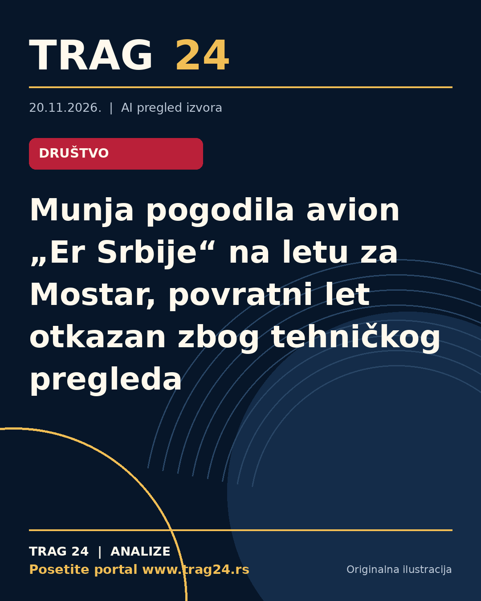

Munja pogodila avion „Er Srbije“ na letu za Mostar, povratni let otkazan zbog tehničkog pregleda

ŠTA SE DOGODILO
Avion kompanije 'Er Srbija', koji je u petak leteo iz Beograda za Mostar (let JU634), tokom leta pogodila je munja. Po sletanju na Međunarodni aerodrom u Mostaru, avion je upućen na detaljan tehnički pregled, zbog čega je otkazan povratni let JU635 planiran iz Mostara za Beograd.
HRONOLOGIJA
Let JU634 poletao je iz Beograda u petak i tokom leta prema Mostaru pogođen je udarom munje usled nepovoljnih vremenskih uslova u regionu. Avion je uspešno sleteo u Mostar, gde je posada prijavila ovaj incident. Nakon sletanja, avion je upućen na tehnički pregled, a povratni let JU635 iz Mostara, zakazan za 15.15 časova istog dana, je otkazan. Tehnički pregled je trebalo da traje do subote, nakon čega se očekuje povratak letelice u Beograd.
ŠTA NAVODE IZVORI
Iz kompanije 'Er Srbija' potvrđuju da je avion pogođen munjom, ali ističu da je to uobičajena pojava u komercijalnom vazdušnom saobraćaju za koju su savremeni putnički avioni projektovani i sertifikovani. Iz kompanije nisu potvrdili da je došlo do oštećenja na avionu, već da je upućivanje na tehnički pregled isključivo mera predostrožnosti radi bezbednosti. Direktor Aerodroma Mostar, Marko Đuzel, navodi da avioni imaju zaštitu od udara munje, ali da će se radi bezbednosti izvršiti sve potrebne provere pre povratka u Beograd. Takođe, navodi da će povratak biti naknadno obavljen, očekivano u subotu.
ŠTA JE POTVRĐENO
Munja je pogodila avion tokom leta JU634. Povratni let JU635 iz Mostara za Beograd je otkazan i avion je upućen na tehnički pregled u Mostaru. Putnicima je obezbeđen alternativni prevoz, a bezbednost putnika i posade je prioritet kompanije. Povratak aviona u Beograd očekuje se nakon završetka pregleda, najkasnije u subotu.
ŠTA NIJE POTVRĐENO
Nije potvrđeno da je došlo do oštećenja repnog dela aviona, iako je postojala prvobitna sumnja u to. Kompanija 'Er Srbija' naglašava da takva informacija nije zvanično potvrđena i da se tehnički pregled sproveden iz predostrožnosti.
ŠTA OSTАJE OTVORENO: Detaljni rezultati tehničkog pregleda aviona i potencijalne posledice na letelicu ostaju nepoznati do završetka provera. Takođe, nije poznat tačan vremenski okvir za eventualan povratak letelice na redovne letove izuzev da je to najavljeno za subotu.
Izvori
- https://nova.rs/vesti/drustvo/munja-pogodila-avion-er-srbije-na-letu-za-mostar-otkazan-povratak-letelica-upucena-na-pregled/
- https://www.blic.rs/biznis/munja-pogodila-avion-er-srbije-na-letu-za-mostar-letelica-upucena-na-tehnicki-pregled/hszs47j
- https://n1info.rs/vesti/munja-pogodila-avion-er-srbije-na-letu-za-mostar/
Ova analiza je pripremljena uz pomoć veštačke inteligencije na osnovu javno dostupnih izvora. Navodi izvora nisu nužno nezavisno potvrđeni.